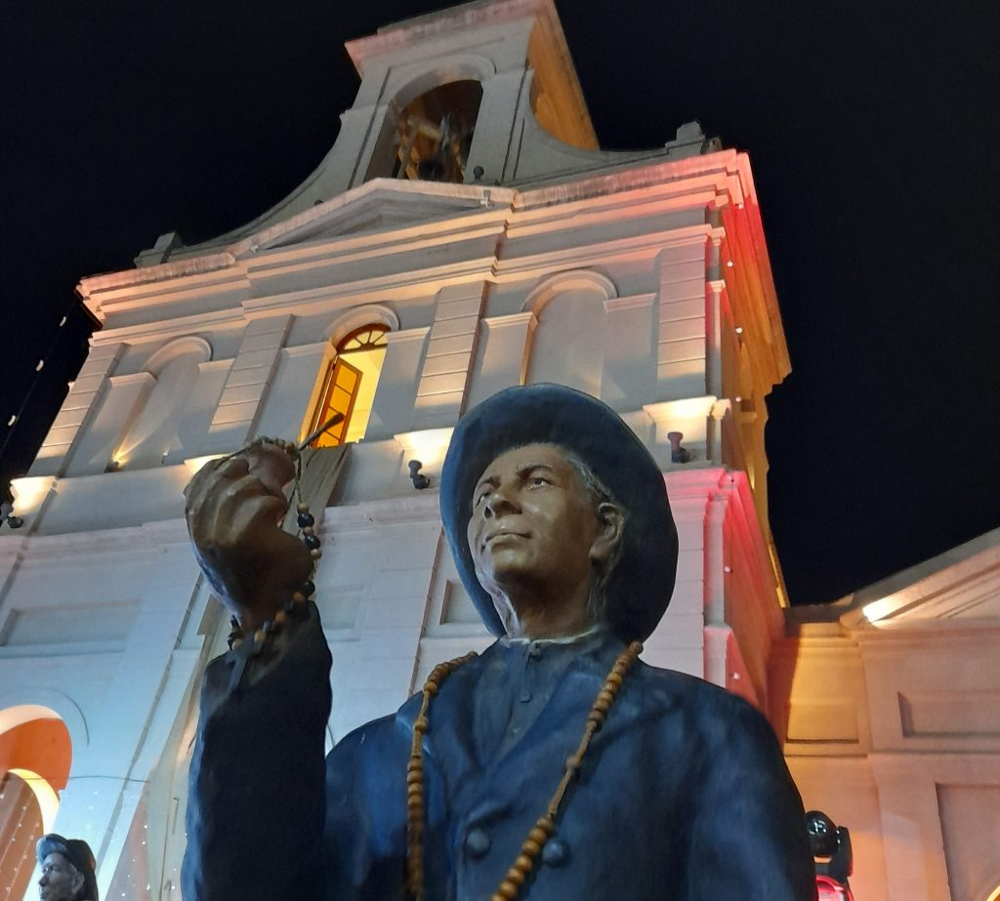

Lugares turísticos
-

Villa Cura Brochero
Ambas poblaciones (Villa Cura Brochero y Mina Clavero), fácilmente accesibles desde la ciudad de Córdoba por el majestuoso Camino de las Altas Cumbres, poseen una buena infraestructura hotelera, campings y variados establecimientos donde degustar preparaciones regionales. Así, este conurbano se ha transformado en principal centro turístico del Valle de Traslasierra y de todo el conjunto de las Sierras de Córdoba.